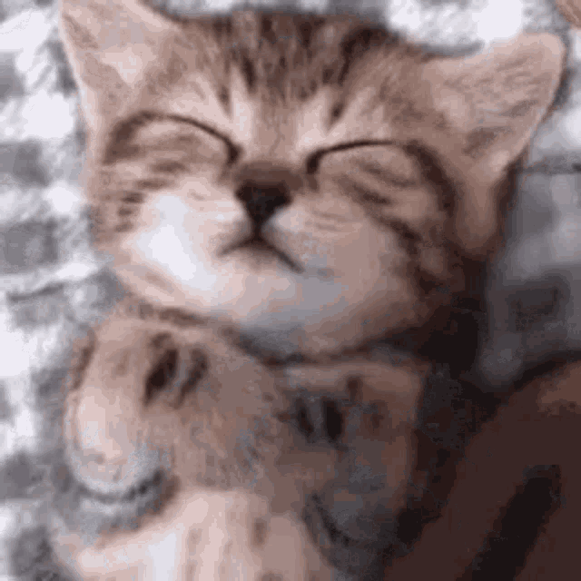
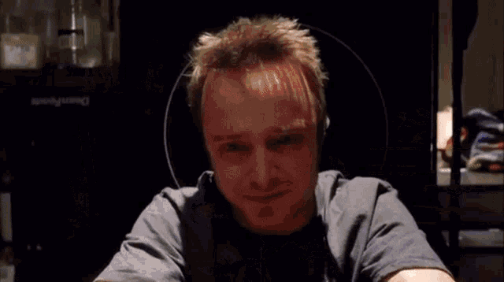

今日きょうは 結構けっこうつまらない 一日いちにちだった。
今晩こんばん勉強会べんきょうかいの宿題しゅくだいがある。その宿題しゅくだいは”何なにをするのが好きすきですか”という宿題しゅくだいだった。
私わたしの一番いちばん好すきなことは寝ねることだ！ いつも寝ねるのが好すきだ
次つぎは私わたしの二番にばん 好すきなことは写真しゃしんを取とるだ！ 上手じょうずじゃないですが楽たのしいだろう

猫ねこが寝ねているヴィデオ
